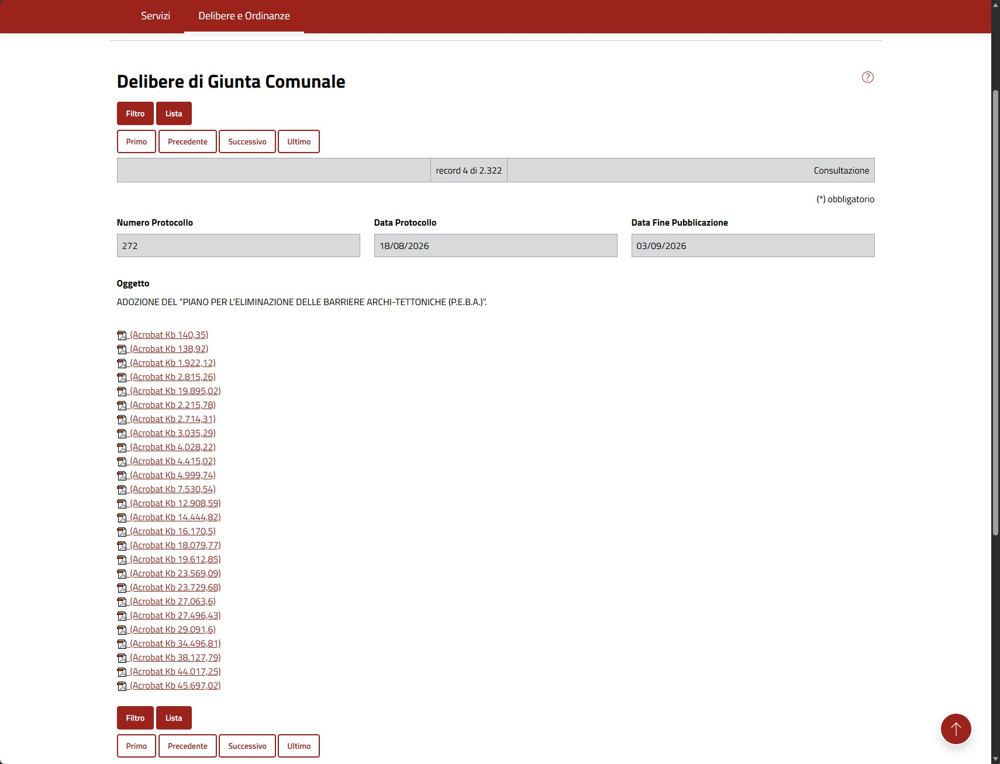
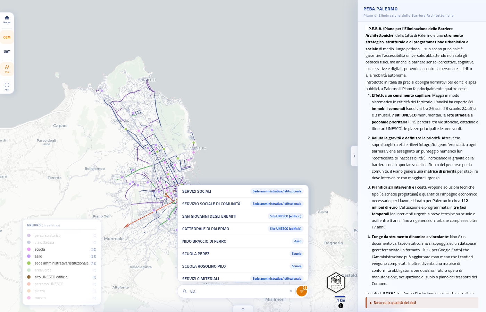
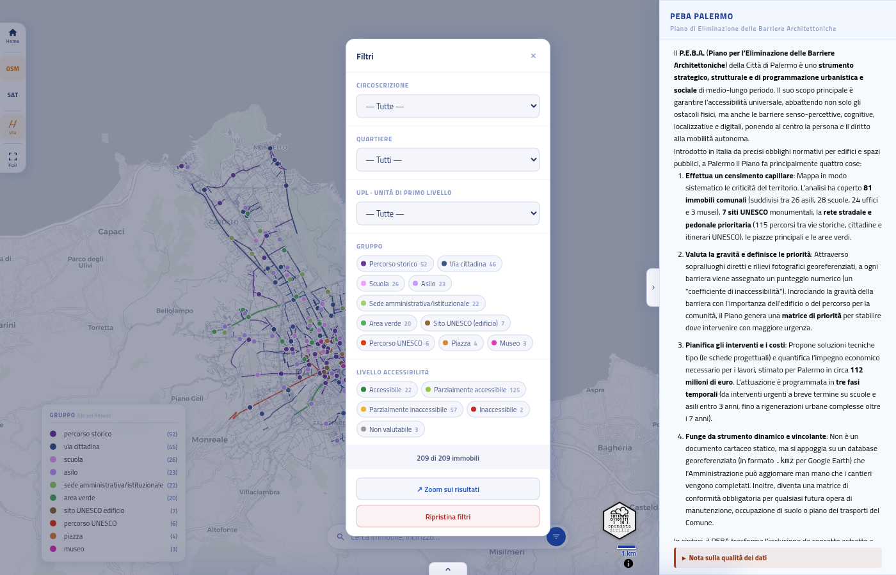
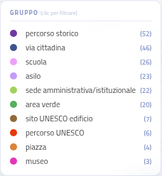
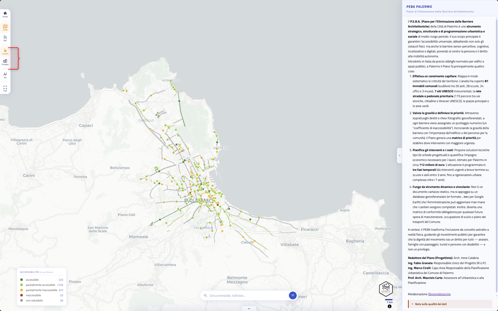
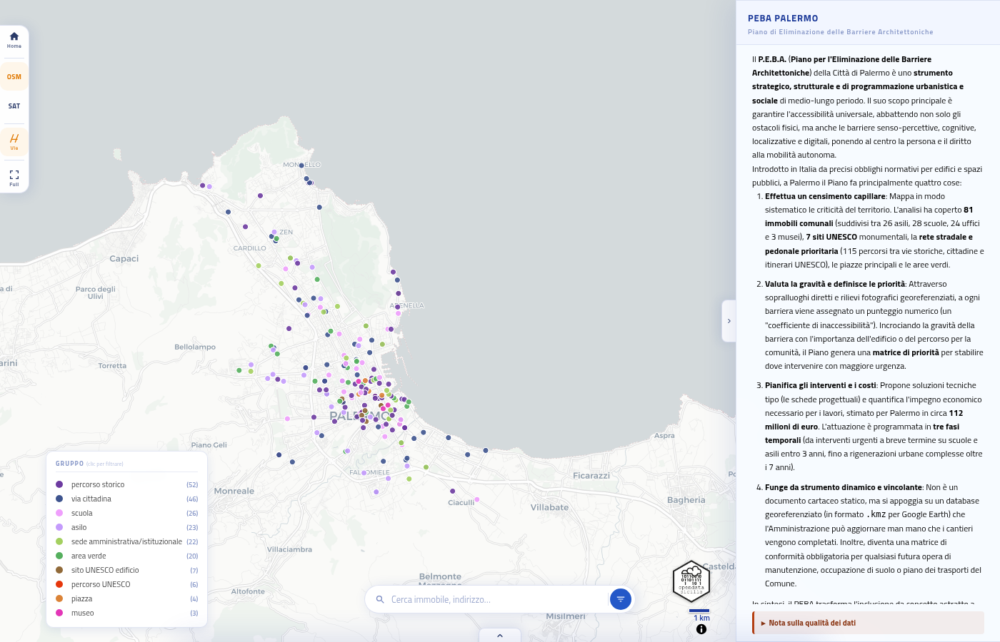
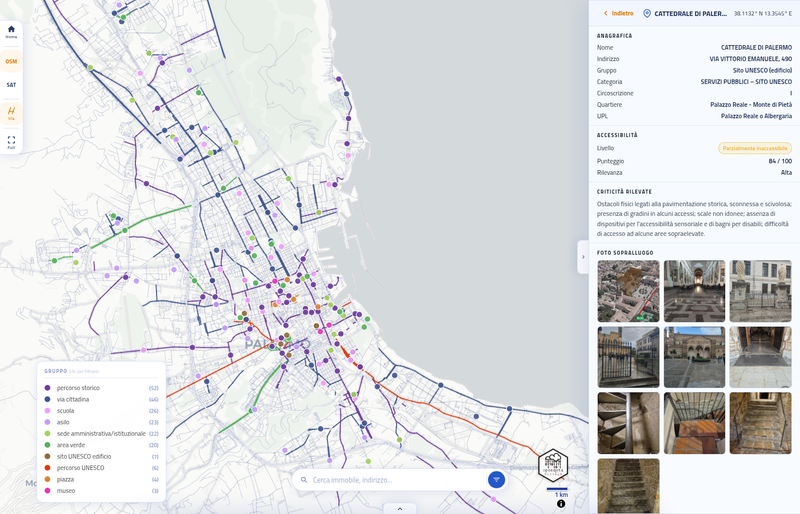
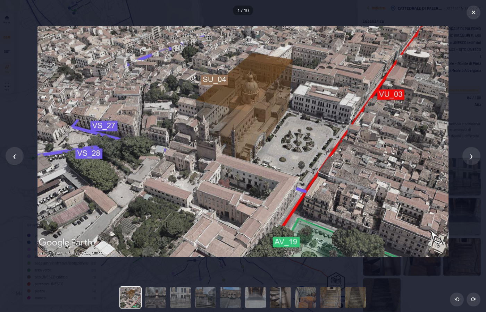

Il P.E.B.A. (Piano per l'Eliminazione delle Barriere Architettoniche) della Città di Palermo, approvata con Delibera di Giunta Comunale n° 272 del 18/08/2026, è uno strumento strategico, strutturale e di programmazione urbanistica e sociale di medio-lungo periodo. Il suo scopo principale è garantire l'accessibilità universale, abbattendo non solo gli ostacoli fisici, ma anche le barriere senso-percettive, cognitive, localizzative e digitali, ponendo al centro la persona e il diritto alla mobilità autonoma.
Introdotto in Italia da precisi obblighi normativi per edifici e spazi pubblici, a Palermo il Piano fa principalmente quattro cose:
.kmz per Google Earth) che l'Amministrazione può aggiornare man mano che
i cantieri vengono completati. Inoltre, diventa una matrice di conformità
obbligatoria per qualsiasi futura opera di manutenzione, occupazione di suolo o
piano dei trasporti del Comune.
In sintesi, il PEBA trasforma l'inclusione da concetto astratto a realtà fisica, guidando gli investimenti pubblici per garantire che la dignità del movimento sia un diritto per tutti — anziani, famiglie con passeggini, turisti e persone con disabilità — e non un privilegio.
Redattore del Piano (Progettista): Arch. Irene Calabria
Ing. Fabio Granata: Responsabile Unico del Progetto (R.U.P.)
Ing. Marco Ciralli: Capo Area Responsabile della Pianificazione
Urbanistica del Comune di Palermo
Prof. Arch. Maurizio Carta: Assessore all'Urbanistica e alla
Pianificazione
Rielaborazione @opendatasicilia
Schede, testi e foto sono stati estratti in automatico dai PDF originali del rilievo con script Python (PyMuPDF) e assistenza di Claude (Anthropic), tramite riconoscimento di pattern testuali e non lettura semantica; le coordinate sono state ricavate per geocodifica degli indirizzi. Possono quindi essere presenti errori, campi mancanti o posizionamenti imprecisi sulla mappa.
Il PEBA (Piano di Eliminazione delle Barriere Architettoniche) è lo strumento di pianificazione con cui il Comune censisce e programma l'abbattimento delle barriere architettoniche negli edifici e negli spazi pubblici. Questa mappa mostra gli esiti del sopralluogo su ciascun immobile/percorso rilevato.
209 punti (sedi amministrative, scuole, asili, aree verdi, percorsi e siti UNESCO, piazze, musei) con livello di accessibilità, punteggio del rilievo, criticità riscontrate e foto del sopralluogo. La rete stradale (sfondo grigio) è mostrata come riferimento territoriale.
Rilievo PEBA — Comune di Palermo. Rete stradale: estratto OpenStreetMap, elaborazione PalermoHub. Delibera di Giunta Comunale n° 272 del 18/08/2026 — Fine pubblicazione 03/09/2026. Comunicato stampa.

Non è possibile inserire il link diretto alla delibera né ai singoli allegati PDF. La piattaforma dell'Albo Pretorio/Servizi Online del Comune di Palermo (SISPI) genera URL legati alla sessione utente (jsessionid) e a un indice posizionale di navigazione (es. idx=0), non a un identificativo permanente del documento. Questo significa che l'indirizzo che compare in barra durante la consultazione è valido solo per la sessione attiva di chi sta navigando; il link ai PDF (viewDocument?col=ALLEGATI&idx=...) punta a una posizione nel "carrello" di navigazione, non al file stesso; una volta scaduta la sessione (o condiviso il link con un'altra persona), il sistema risponde con errore "File non visualizzabile. Sessione scaduta". Per questo motivo la struttura non consente permalink stabili. Il riferimento univoco e permanente resta il numero di protocollo e la data dell'atto (es. Delibera G.C. n. 272 del 18/08/2026), da recuperare tramite la funzione "Filtro" del portale.
PalermoHub / OpenDataSicilia.it
Contenuti distribuiti con licenza CC BY-SA 4.0.
Web app progettata e sviluppata da @opendatasicilia in collaborazione con Claude AI (Anthropic), che ha affiancato le scelte architetturali, l'ottimizzazione del codice e lo sviluppo delle funzionalità di visualizzazione geospaziale.
I contenuti presenti in questa sezione, compresi testi ed elementi grafici, hanno carattere puramente informativo e divulgativo. Non sono presenti dati personali o sensibili. Si precisa che questi materiali non costituiscono documenti ufficiali né hanno alcun valore legale: per consultare la documentazione ufficiale e legalmente vincolante è necessario fare riferimento agli atti definitivi allegati alle relative deliberazioni degli organi competenti. Non si tratta quindi di un documento ufficiale, poiché per quello restano validi gli atti della delibera, ma vuole essere uno strumento utile fin da subito, a disposizione di cittadini e amministrazione, per farsi un'idea, luogo per luogo, di dove Palermo è già accessibile e dove c'è ancora lavoro da fare. Va detto che, vista la modalità di estrazione automatica dei dati dai PDF originali, la mappa e le informazioni contenute nelle schede possono presentare errori, imprecisioni o campi mancanti.
Usa la barra di ricerca in alto per trovare un immobile per nome o indirizzo. Digitando alcuni caratteri compare un elenco di risultati: clicca su una voce per centrare la mappa sul punto e aprire la sua scheda nel pannello destro.

L'icona a imbuto accanto alla ricerca apre il pannello filtri: circoscrizione, quartiere, UPL (Unità di Primo Livello) e gruppo tematico. I filtri sono a cascata — scegliendo una circoscrizione, l'elenco dei quartieri si restringe di conseguenza. Un pallino sull'icona indica che sono attivi uno o più filtri.

In basso a sinistra sulla mappa c'è la legenda dei livelli di accessibilità, ciascuno con un colore proprio. Clicca su una voce della legenda per mostrare/nascondere quel livello direttamente sulla mappa, senza passare dal pannello filtri. Su schermi piccoli la legenda è comprimibile: tocca il titolo per aprirla o chiuderla.

Nella toolbar in alto, il selettore "Accessibilità / Gruppo" cambia il criterio di colorazione di mappa e legenda: per livello di accessibilità (impostazione predefinita) oppure per gruppo/tipo di immobile (scuola, museo, area verde, percorso...). Anche le linee delle vie e dei percorsi PEBA cambiano colore in base al criterio scelto: per gruppo seguono sempre il tipo di percorso, per accessibilità mostrano il livello del percorso a cui appartengono quando disponibile, altrimenti restano grigie (via non associata a un percorso valutato).

Trascina per spostarti, usa la rotellina o i pulsanti +/− per zoomare. Il pulsante con l'icona "casa" nella toolbar riporta la mappa alla vista iniziale. Ogni punto colorato rappresenta un immobile rilevato; passandoci sopra compare un'anteprima con il codice identificativo, mentre un clic apre la scheda completa.

Cliccando su un punto si apre, nel pannello destro, la scheda dell'immobile: anagrafica (nome, indirizzo, gruppo, circoscrizione, quartiere, UPL), livello di accessibilità e punteggio, le criticità riscontrate durante il sopralluogo e, in fondo, la miniatura di tutte le foto scattate. Il link "Indietro" in alto torna alla vista con la lista/mappa.

Cliccando su una miniatura nella scheda, la foto si apre a schermo intero. Usa le frecce ‹ › (o le frecce della tastiera) per scorrere tra tutti gli scatti del sopralluogo, i pulsanti ⟲ ⟳ (o i tasti [ e ]) per ruotarli di 90°, il contatore in alto per sapere a che punto sei, e la ✕ per chiudere e tornare alla scheda.

Il pannello in basso (dove ti trovi ora) si apre e chiude toccando la maniglia con la freccia. Contiene tre schede: Info (cos'è la mappa e le fonti dati), Guida (questa pagina) e Metodologia (come sono stati estratti i dati dai PDF originali).
Il punto di partenza sono 25 file PDF. Contengono 88 schede tecniche sull'accessibilità. Di queste, 81 riguardano edifici comunali. Le altre 7 riguardano siti UNESCO. Ogni scheda occupa due pagine con una struttura fissa e ripetuta. Questa regolarità ha reso possibile un'estrazione automatica invece di una trascrizione manuale.
Per leggere il contenuto dei PDF è stata usata la libreria Python chiamata PyMuPDF. Questa libreria permette di estrarre sia il testo sia le immagini incorporate nelle pagine, mantenendo l'informazione sulla loro posizione. Serve proprio questo per un documento con un layout a griglia fisso, dove ogni campo si trova sempre più o meno nello stesso punto della pagina.
Uno script analizza ogni coppia di pagine e riconosce i campi grazie a etichette ricorrenti, per esempio l'indirizzo, il tipo di edificio, la circoscrizione, le note sulla accessibilità. Il testo grezzo viene ripulito da interruzioni di riga inutili e da spazi doppi. In alcuni punti la formattazione originale era irregolare, quindi lo script ha richiesto più correzioni successive per gestire casi particolari senza rompere l'analisi degli altri.
Ogni scheda include quasi sempre una foto aerea o una foto dell'edificio. Le immagini vengono estratte in formato originale e salvate in cartelle separate, una per ogni scheda, così restano collegate al record corrispondente. In totale sono state recuperate 2346 foto da tutto l'insieme dei PDF analizzati, un numero molto più alto delle sole 88 schede iniziali perché molte pagine contenevano più immagini o riguardavano vie e percorsi con più fotografie ciascuno.
Con un secondo giro sui PDF, il numero di schede è salito da 88 a 229. Alle schede sugli edifici si sono aggiunte quelle su piazze, vie, percorsi storici legati ai siti UNESCO e aree verdi. Anche qui la logica è la stessa: individuare la struttura ricorrente delle pagine e ripetere l'estrazione con le stesse regole, adattate al nuovo tipo di contenuto.
I dati estratti non contenevano coordinate geografiche. Per ottenerle è stato usato il servizio di geocodifica di OpenStreetMap, interrogato a partire dagli indirizzi testuali presenti nelle schede. Il procedimento ha funzionato per la maggior parte dei casi, ma non per tutti: alcuni indirizzi erano troppo generici o scritti in modo non standard per essere riconosciuti automaticamente. In quei casi le coordinate sono state stimate a mano, incrociando altre fonti.
Le coordinate ottenute sono servite anche per un altro passaggio: capire a quale circoscrizione cittadina appartiene ciascuna scheda. Questo è stato fatto costruendo una mappa di corrispondenza tra quartieri e circoscrizioni, e applicandola ai punti geocodificati. Su 229 schede totali, 227 sono state assegnate con successo, la maggior parte tramite geocodifica automatica e una piccola parte con stima manuale.
Tutti i dati raccolti sono stati organizzati in più formati. Ci sono un file CSV completo con tutti i campi, un file JSON equivalente, e una pagina HTML interattiva che permette di consultare le schede, filtrarle per circoscrizione e vedere le foto in una galleria a scorrimento. La pagina include anche una mappa costruita con tessere scaricate da OpenStreetMap, sopra cui sono stati disegnati dei marcatori per ogni scheda geolocalizzata, usando una proiezione Web Mercator per convertire le coordinate in pixel sulla mappa.
Il metodo si basa sul riconoscimento di pattern testuali e posizionali nei PDF, non su una lettura semantica del contenuto. Se un domani arrivassero PDF con un layout diverso da quello analizzato, lo script andrebbe adattato di nuovo. Per questo motivo l'estrazione non è del tutto generica, ma resta legata alla struttura specifica di questi documenti.
La Relazione Generale del PEBA (Piano di Eliminazione delle Barriere Architettoniche) della Città di Palermo definisce l'impianto metodologico, normativo, conoscitivo e programmatico per trasformare il territorio comunale in uno spazio pienamente inclusivo. Non si tratta di un semplice elenco di interventi edilizi, ma di uno strumento strategico e dinamico di pianificazione sociale, inclusiva e urbanistica a medio-lungo termine.
Ecco la sintesi strutturata dei punti chiave della Relazione:
Inclusione multidimensionale: il piano supera la visione della barriera come mero "ostacolo fisico", affrontando in modo integrato le limitazioni di carattere sensoriale, cognitivo e organizzativo-gestionale (come la burocrazia opaca o la mancanza di formazione del personale).
Universal Design (Progettazione Universale): l'accessibilità non viene intesa come un "intervento riparatorio" a posteriori, ma come un principio progettuale d'insieme affinché gli ambienti siano fruibili autonomamente dalla maggior parte delle persone (anziani, bambini, famiglie, persone con disabilità temporanee o permanenti, turisti). Il piano si fonda sui 7 principi guida dell'Universal Design (uso equo, flessibile, semplice, percettibile, tolleranza all'errore, sforzo fisico contenuto e spazi idonei).
Integrazione Amministrativa: il PEBA è concepito come una matrice di conformità obbligatoria e vincolante che deve integrarsi con tutti gli strumenti di pianificazione del Comune (Piano Triennale delle Opere Pubbliche, PUG, PUMS, Piani di Protezione Civile, regolamenti edilizi e concessioni di suolo pubblico).
Il censimento ha definito un perimetro definitivo di indagine che copre le aree strategiche della città:
Edifici Pubblici (81 immobili): analisi dettagliata di 26 asili nido, 28 scuole (dell'infanzia, primarie e secondarie), 24 uffici pubblici e sedi istituzionali (es. sedi circoscrizionali, comando di Polizia Municipale, grandi infrastrutture come lo Stadio Comunale e i principali cimiteri) e 3 siti culturali/musei (Palazzo Ziino, Galleria d'Arte Moderna - GAM, Archivio Storico Comunale).
Siti e Itinerari UNESCO: rilievo specifico per 7 siti monumentali (La Zisa, San Cataldo, Martorana, Cattedrale di Palermo, Palazzo Reale e Cappella Palatina, San Giovanni degli Eremiti, Ponte dell'Ammiraglio).
Rete di Viabilità e Spazi Aperti: mappatura di 115 percorsi pedonali prioritari (suddivisi in 6 percorsi UNESCO, 57 percorsi di vie storiche e 52 percorsi di vie cittadine), oltre a 4 piazze principali e 23 aree verdi/parchi urbani.
Sopralluoghi Certificati: i rilievi sul campo sono stati eseguiti con schede standardizzate e un massivo rilievo fotografico georeferenziato. Ciascun ostacolo è registrato con coordinate GPS decimali, data e ora dello scatto, certificando legalmente lo stato di fatto.
Database Dinamico in formato .kmz: tutti i dati sono strutturati in un database cartografico interattivo su piattaforma Google Earth. Questo sistema consente ai tecnici comunali di monitorare lo stato di avanzamento in tempo reale, sostituendo le foto delle barriere con quelle dei cantieri completati.
Punteggi di Inaccessibilità: ciascun requisito tecnico analizzato (pendenze, larghezze, pavimentazioni, ostacoli) viene valutato su una scala da 1 (piena conformità) a 4 (barriera totale o assenza del requisito). La somma definisce la fascia di inaccessibilità dell'elemento (es. da accessibile a totalmente inaccessibile).
Matrice di Rilevanza: la priorità d'intervento incrocia la gravità del "guasto tecnico" con l'importanza sociale dell'edificio o del percorso (es. scuole, uffici pubblici e percorsi di connessione strategica hanno priorità alta).
L'investimento totale stimato per rendere Palermo accessibile è pari a circa € 112.284.726,40, con la spesa principale concentrata sulla viabilità diffusa (oltre € 103 milioni complessivi tra vie cittadine, storiche e itinerari UNESCO). L'attuazione è strutturata in tre fasi:
Fase 1 (1-3 anni): interventi d'urgenza e indispensabili su asili, scuole e uffici pubblici, eliminando al contempo le situazioni di immediato pericolo lungo i percorsi principali.
Fase 2 (4-7 anni): interventi necessari a medio termine focalizzati sulla viabilità storica e sull'itinerario monumentale UNESCO.
Fase 3 (oltre 7 anni): azioni a lungo termine sui grandi assi viari delle vie cittadine, sulle aree verdi e sul patrimonio storico-vincolato, che richiedono iter autorizzativi e cantierizzazioni più complesse.
Il Piano impone precise linee guida vincolanti per i futuri progetti di adeguamento stradale ed edilizio:
Edifici pubblici: almeno un posto auto riservato collegato all'accesso, citofoni a altezza 110-130 cm, porte d'ingresso con luce netta di almeno 80 cm, percorsi tattili interni, almeno un bagno disabili per piano e ascensori conformi (dimensioni minime 1,40x1,10 m). Nei beni storici si privilegiano soluzioni a minimo impatto visivo e materiali compatibili (es. pietra naturale trattata, rampe integrate o amovibili).
Percorsi pedonali: larghezza minima dei marciapiedi di 90 cm (consigliata 150 cm), pendenza longitudinale inferiore all'8% e trasversale massima dell'1%, pavimentazioni antisdrucciolo, adozione della segnaletica tattile a terra (sistema LOGES-VETRA) e scivoli stradali con pendenza massima del 15%.
Aree Verdi: sentieri in materiali stabilizzati/drenanti a raso, panchine con spazio libero laterale per accostamento carrozzine, parchi gioco inclusivi con pavimentazioni antitrauma e mappe tattili per l'orientamento.